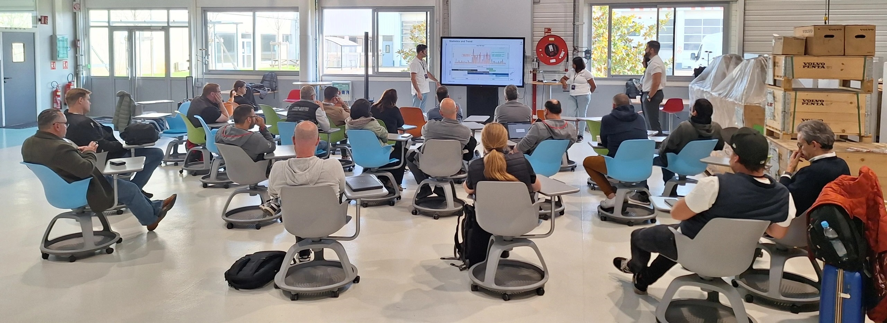
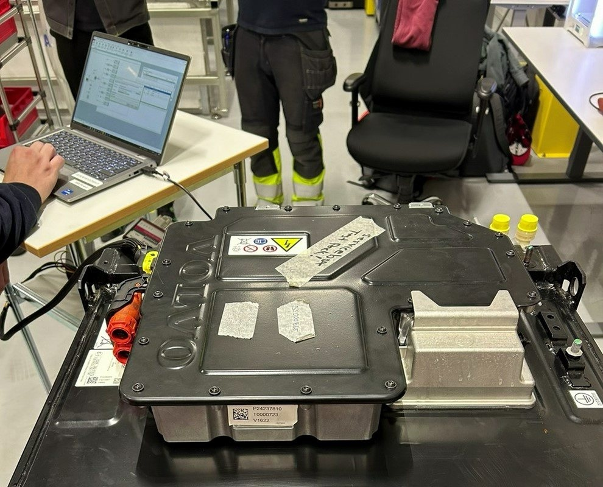
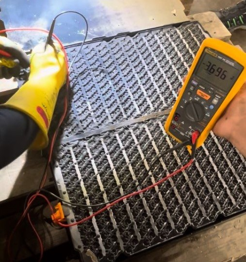

Software Quality Leadership - ESS
System-level reviews and technical investigations for electromobility energy storage systems across multiple vehicle brands.
Technical Highlights
- Led software-related field campaigns for Volvo and Renault Trucks.
- Analyzed customer issues, field data, CAN logs, and vehicle behavior using SQL, Python, CANalyzer, CAN, and JIRA.
- Led system-level root-cause investigations across software, hardware, sensing, diagnostics, calibration, and integration.
Turned field evidence and technical findings into quality decisions, specification updates, and improved product robustness.